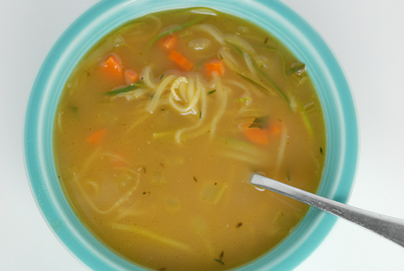

| Home | Desserts | Beverages | Dishes | Author | Credits |


Chicken Noodle Soup
Ingredients:
- 1 quart chicken stock
- 1 rib celery, diced
- 1 large carrot, diced
- 1 small zucchini, made into noodles with julienne slicer
Cooking Procedure:
- Bring chicken stock to a boil in a medium pot, then reduce to a simmer
- Add celery and carrots to pot and simmer until tender, about 10-20 minutes
- Add zucchini noodles and cook a few more minutes